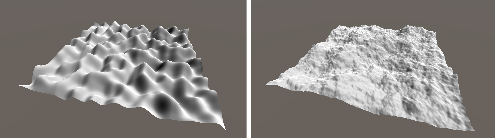
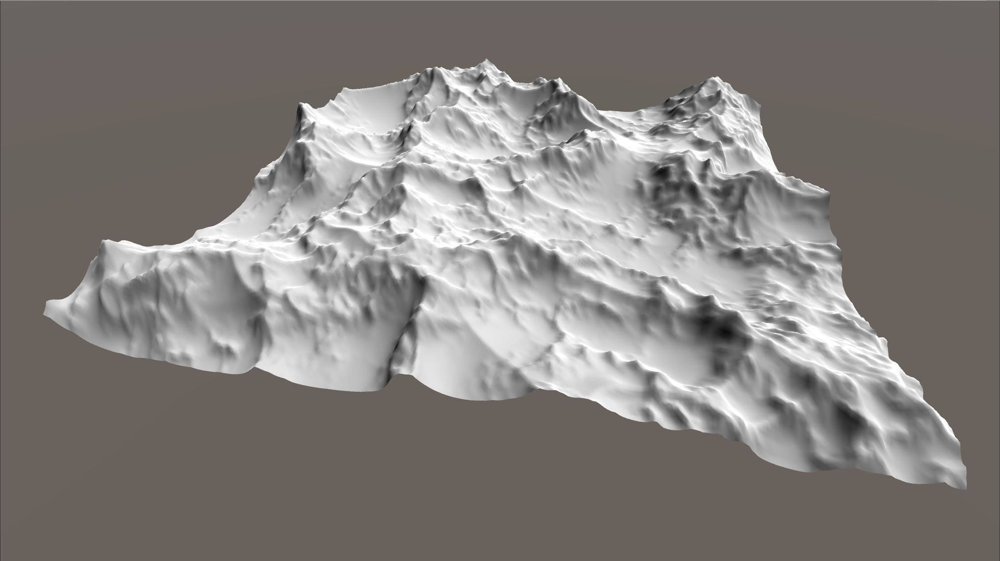
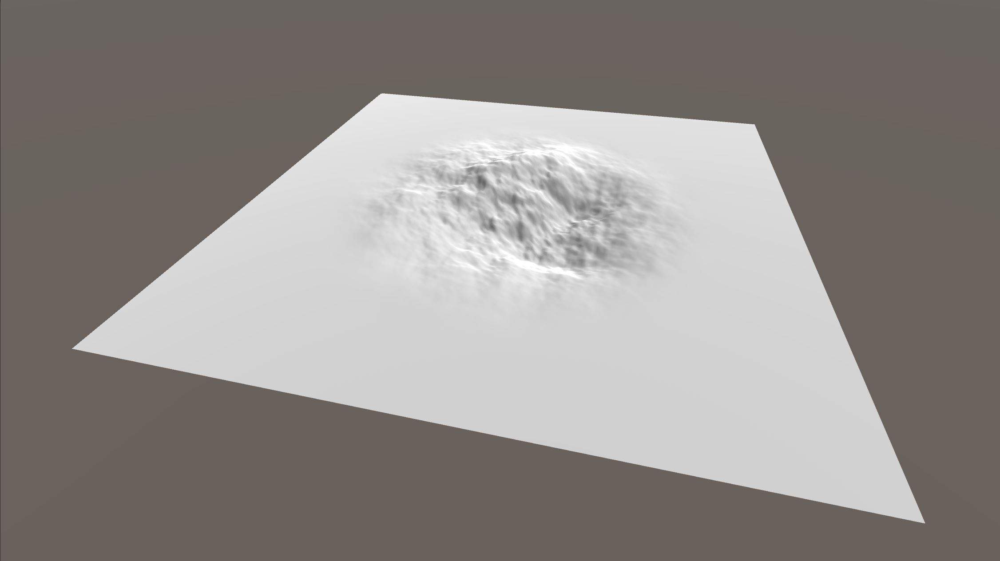

Axel Paris - PhD Student in Computer Graphics
Home
Publications
Resume
Email
Twitter
Terrain Generation Techniques #1
June 9, 2020.
Terrains are one of the most popular subject in procedural generation. You will find countless tutorials on the internet showing you how to create procedural terrains with islands, mountains and so on.
However, these resources are sometimes inacurate, incomplete and above all, repetitive. 90% of procedural generation tutorials will show you a perlin-noise terrain with an example
of procedural texturing based on elevation and slope. While that's a good thing for beginners that want to get started, it is also a problem for more experienced developpers looking for more advanced resources.
These serie of posts aims at showing you modern terrain generation techniques with examples, lots of images and discussion of pros and cons. By the end, you will hopefully have a better
set of tools for your procedural terrains. Before diving in, here is a list of important statements about terrain generation:
- A terrain is not a greyscale image: most video games uses 2D models for terrains; often stored as a greyscale image on disk. However, terrains are not pictures and cannot be fully captured by a 2D representation.
This is because vertical areas, which are often important in virtual worlds, are made of multiple 3D features. We will call these features volumetric, because they cannot be captured by a heightfield, or heightmap.
These features include overhangs, caves, block structures but also features like big rocks found in plains, resulting from a collapsing event higher in a mountain.
- A noise-based terrain is not realistic: Perlin-noise based terrains found all over the internet are not realistic. You will never, ever find a real life terrain that looks like fractal noise. However, you can find
landforms locally similar to noise, and we will talk about that later.
- Terrains are made of landforms created at different scales : an important aspect in terrain generation is scale. Moutain ranges are in the macro scale. They make up the coarse shape of the terrain and are
the biggest landform. Meso-scale features include overhangs, arches, river and hills. Micro-scale is all the fine detail of the terrain that you can see in close view, in the order of centimeters. This classification, while
very high level and not detailed, is useful when modeling terrains.
- Terrains are made of local landforms: real terrains are not as self-similar as noise functions. And even if mountains ranges sometimes look the same, they are not in reality. Locality of landforms is important.
Along these posts, we will try to remember these rules and discuss them when implementing different techniques. So let's get started by discussing noise.

This is the kind of thing you can find everywhere on the internet: left is one octave of perlin noise,
right is a fractal combination of the same noise. In this serie, we aim at generating better terrains than that.
Self Similarity of noise
Perlin noise was created by Ken Perlin in 1985, and it has been used ever since everywhere in computer graphics. Other types of noise were then created, including simplex noise, fractal noise and so on.
While I will not discuss how they work (you can find plenty of resources about that on the internet), I will talk about some common properties of noise functions.
A noise or a fractal noise function is self-similar across its scale. What does it mean ? It means that no matter where you evaluate the function, it will look more or less the same. In our case, it means
that using a fractal noise to represent the alps is not possible: you will never get the variation between plains and mountains ranges. By using a noise with a high amplitude, you will get mountains - pretty bad ones
if you go too high. Whereas if you use a lower amplitude, you will get small hills and possibly some plain areas - but you cannot get both with a single function.
Or can you ? Well, mostly no, but you can get better results by using a function called a multifractal. The interesting property of such function is that the frequency (which determines the spacing between features)
changes progressively with the number of octave, which leads to more interesting terrains alternating between valleys and mountains, as depicted in the following figure. However, the look
will remain self similar across the domain - you will get the same nice pattern everywhere, making you larger terrains unrealistic and boring.

A terrain made with a Ridge multifractal noise.
Noise functions are not all bad: they can be used to represent realistic (or at least visually convincing) landforms at a specific frequency (scale).
One of the principle stated at the beginning of this post was that terrains are made of landforms of different scales at different locations: for example mountain ranges and valleys (macro), rivers and drainage patterns (meso) and fine rock details (micro).
One good idea for efficiently representing these different scale is to use different noise functions locally. We have seen that noise is self-similar by construction - thus it is efficient for
representing one specific landform such as a single mountain range or an alternating pattern of hills and plains. Thus by combining noise primitives with different parameters, we should be able to get more realistic terrains.
Modeling with noise primitives
The idea is not mine: some research has been made recently on this kind of constructivist model: Genevaux et al 2015. What I will explain here is just a short, maybe simpler version of what is demonstrated in the paper.
The basic idea here is to create primitives that represents a single landform, and that have a compact support which come from a skeleton. The skeleton is used to limit the influence of the noise, and it allows us to use other primitives at different locations.
An important aspect of such primitive is continuity: we have to make sure that combining primitives together will result in a smooth output without discontinuities. Let's take an example with a point skeleton. Its
influence is 1 at the center and gradually fall off to the boundary where it eventually becomes zero. The function used to go from 1 to 0 can be anything as long as it ensures continuity. Here, we will use the following function: f(x) = (1-x²)^3
which can be translated in C++ code:
/*
\brief Compactly supported smooth interpolating function.
\param x squared distance.
\param r squared radius.
*/
float CubicFalloff(float x, float r)
{
return (x > r) ? 0.0f : (1.0f - x / r) * (1.0f - x / r) * (1.0f - x / r);
}
Now, if we combine noise with a point skeleton, we can get these kind of output.

A fractal perlin noise combined with a point skeleton. Note the progressive fall to zero at the boundaries.
Combining different primitives
Question is, how do we combine multiple primitives together ? This is where the constructivist aspect of the method comes into play. The short answer is that they are many way to combine primitives together: blending, replacing etc...
For the sake of simplicity, I will show you the blending operator only. You can find the rest in the paper.
What does blending means ?